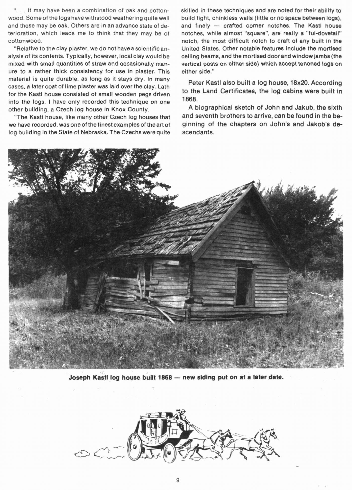
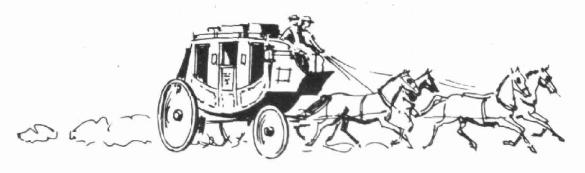

The book · The Kastls: from Bohemia to America
Page 9 Joseph Kastl log house built 1868 — new siding put on at a later date.


Transcription
". . . it may have been a combination of oak and cottonwood. Some of the logs have withstood weathering quite well and these may be oak. Others are in an advance state of deterioration, which leads me to think that they may be of cottonwood.
"Relative to the clay plaster, we do not have a scientific analysis of its contents. Typically, however, local clay would be mixed with small quantities of straw and occasionally manure to a rather thick consistency for use in plaster. This material is quite durable, as long as it stays dry. In many cases, a later coat of lime plaster was laid over the clay. Lath for the Kastl house consisted of small wooden pegs driven into the logs. I have only recorded this technique on one other building, a Czech log house in Knox County.
"The Kastl house, like many other Czech log houses that we have recorded, was one of the finest examples of the art of log building in the State of Nebraska. The Czechs were quite skilled in these techniques and are noted for their ability to build tight, chinkless walls (little or no space between logs), and finely — crafted corner notches. The Kastl house notches, while almost "square", are really a "ful-dovetail" notch, the most difficult notch to craft of any built in the United States. Other notable features include the mortised ceiling beams, and the mortised door and window jambs (the vertical posts on either side) which accept tenoned logs on either side."
Peter Kastl also built a log house, 18x20. According to the Land Certificates, the log cabins were built in 1868.
A biographical sketch of John and Jakub, the sixth and seventh brothers to arrive, can be found in the beginning of the chapters on John's and Jakob's descendants.



Transcriber’s notes
Text at top continues a quotation begun on the previous page (description of the Kastl log house). Stagecoach drawing is a decorative vignette.